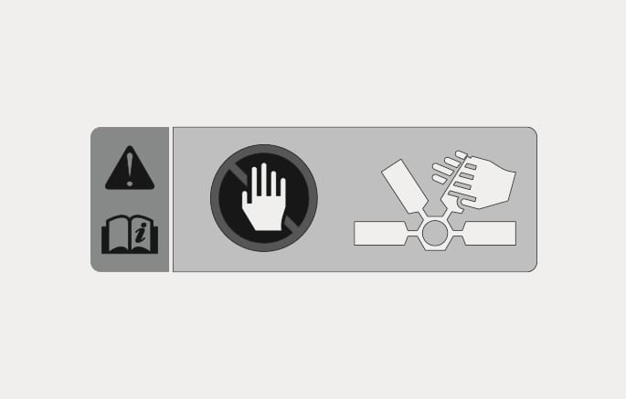

안전을 위한 주의사항
차량을 점검하거나 정비하기 전에 안전을 위한 주의사항을 주의 깊게 읽고 숙지하십시오. 주의사항의 지시를 따르지 않는 경우 감전, 화재 등의 사고로 인해 부상, 인명피해, 기기 고장 및 재산상의 손실이 발생할 수 있습니다.
전자 제어 장치의 고압 전류가 방출하는 전자파는 인공 심장 박동기를 비롯한 의료용 전기 기기에 치명적인 영향을 미칠 수 있습니다. 의료용 전기 기기를 사용 중인 경우, 차량을 충전하기 전 의료진 및 의료용 전기 기기 제조 업체에 문의해 전자 제어 장치의 고압 전류가 의료용 전기 기기의 작동에 영향을 미치지 않는지 확인하십시오.
-
모터룸 내부의 전기 동력 장치가 충분히 식은 후 냉각수를 점검하십시오. 전기 동력 장치가 뜨거울 때 냉각수 캡을 열면 뜨거운 냉각수와 수증기가 뿜어져 나와 심각한 화상을 입을 수 있습니다.
-
모터룸 내부의 냉각팬을 만지거나 냉각팬에 신체 일부를 가까이 하지 마십시오. 차량의 시동이 꺼져 있는 동안에도 배터리 온도 제어 등을 위해 냉각팬이 자동으로 작동할 수 있습니다.

2C_MotorRoomHotCaution
-
냉각팬이 자동으로 작동하는 것을 방지하려면 차량의 시동을 끄고 배터리의 음극(-) 단자를 분리하십시오.
차량을 점검하거나 정비할 때 안전에 각별히 주의하십시오.
-
시동을 끄고 배터리의 음극(-) 단자를 분리해 전원을 차단한 후 차량을 점검하십시오.
-
잭으로 차량을 들어 올린 상태로 차량 밑으로 들어가지 마십시오. 차량이 잭으로부터 미끄러지며 떨어지면 심각한 부상을 입을 수 있습니다.
-
배터리를 불꽃으로부터 멀리하십시오. 배터리 작동 중 발생하는 폭발성 가스로 인해 화재가 발생할 수 있습니다.
-
시동이 켜진 차량을 점검할 때는 소매가 헐렁한 작업복을 입거나 시계, 반지 등을 착용하지 말고, 냉각팬에 손, 소매, 옷자락, 머리카락, 공구 등이 닿지 않도록 주의하십시오.
-
배터리의 음극(-) 단자를 연결할 때 극성에 주의하십시오. 음극(-) 단자에 양극(+) 케이블을 연결하거나 양극(+) 단자에 음극(-) 케이블을 연결하지 않도록 각별히 주의하십시오. 전기 화재가 발생할 수 있습니다.
-
모터룸 주변에 화기를 가까이 하지 마십시오. 와셔액 등 각종 휘발성 용액이나 오일의 증발 가스가 인화하는 경우 화재가 발생할 수 있습니다.
-
배터리 및 전기 배선을 점검하기 전에 배터리의 음극(-) 단자를 분리하십시오.
-
모터가 작동하지 않는 중에도 냉각팬이 작동할 수 있으므로 주의하십시오. 냉각팬이 갑자기 작동하면 심각한 부상이 발생할 수 있으므로, 시동이 켜진 상태에서 점검해야 할 때를 제외하고는 차량의 시동을 끄십시오.
-
구동용(고전압) 배터리와 전기 배선에는 전류가 흐르고 있습니다. 차량 점검 중 퓨즈나 메인 퓨즈가 단선되지 않도록 주의하십시오.
-
모터룸을 점검하거나 내부 부품을 정비할 때 부품 위에 무거운 물건을 올리지 말고, 무리한 힘이나 충격을 가하지 마십시오.